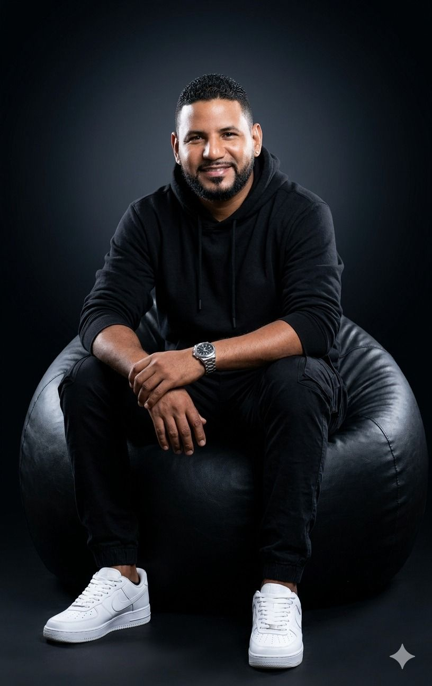

Kingdom Studio
SaaS platform that generates, reviews, approves, schedules, and publishes editorial content with AI, with a control panel and analytics. FastAPI, Next.js, Supabase.
View Case StudyFind projects similar to what you need: AI automations, SaaS platforms, e-commerce, landing pages, and corporate websites.
SaaS platform that generates, reviews, approves, schedules, and publishes editorial content with AI, with a control panel and analytics. FastAPI, Next.js, Supabase.
View Case Study
Multi-tenant system for a church to organize its service programs with real security between churches: automatic role assignment, RBAC, and PDF generation. Node.js, TypeScript, MongoDB.
View Case Study
Billing and management platform for schools: tuition, delinquency, enrollment, and WhatsApp notifications. React, Vite, Tailwind CSS 4.
View Case Study
E-commerce and sales management with Meta Business Suite infrastructure: connected assets, advertising account, pixel, and product catalog.
View Case Study
Modern website for a financial cooperative with React, glassmorphism, dark mode, and Framer Motion animations.
View Case Study
Proprietary commercial automation with four specialized agents, per-customer memory, campaign attribution, and secure hand-off to human support.
View Case StudyBrowse by category: Landing Pages · SaaS & Platforms · Automation & AI · E-commerce · Corporate



Senior graphic designer and associate creative director
José Miguel joins selected projects that need specialized visual execution. Together we can combine strategy, web development, and automation with a coherent visual identity built for every customer touchpoint.
Professional collaboration on a per-project basis, subject to scope and availability.
Technical exercises and experiments — not client projects, but they show how I learn and practice.


Landing page with CSS animations and a conversion-focused structure.
View project
Tell me what you need and I'll get back to you within 24 hours.